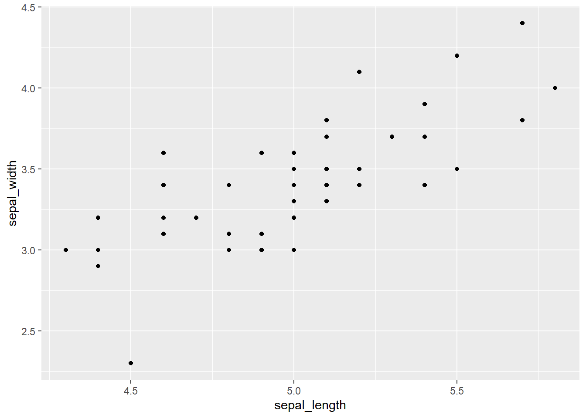
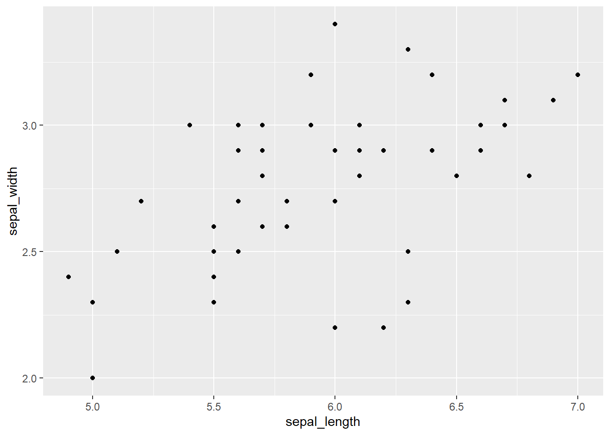
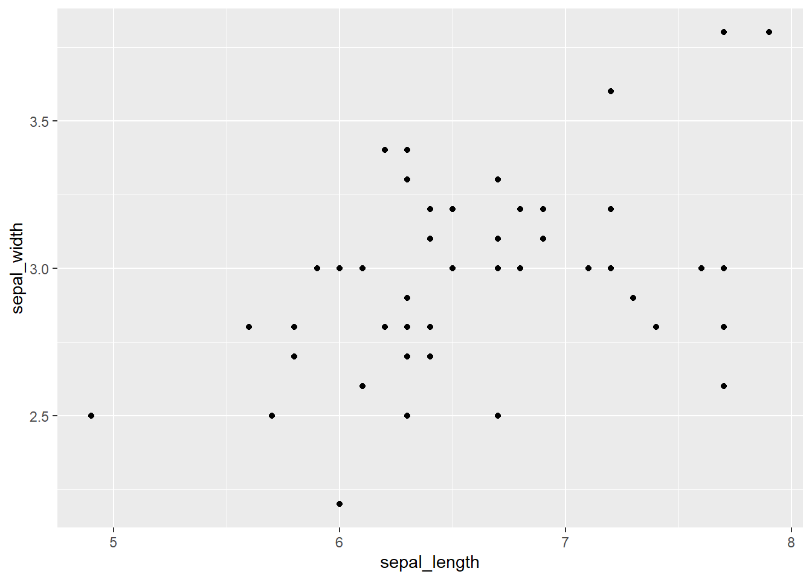

data <- iris |> as_tibble() |> janitor::clean_names()
out <- data |>
group_nest(species) |>
deframe()
out <- out |>
map(\(data) {
ggplot(data, aes(x = sepal_length, y = sepal_width)) +
geom_point()
})When working with a list of objects, it may be useful to organize the objects into tabs instead of a huge list of individual objects
Using the iris dataset as a working example, I generate a list of ggplot objects.
The list of ggplot2 objects can be called and presented as below
out$setosa
$versicolor
$virginica
Instead of presenting a long list of plots, we can organize the plots into individual tabs. In order to do this, we utilize a combination of imap_chr() and knit_child(). We use imap_chr() to pass on individual plots into knit_child(). We wrap this chunk within a fenced div panel-tabset, and utilize results: asis.
::: panel-tabset
```{r}
#| results: asis
out <- imap_chr(out, \(out, title) {
text <- glue::glue("## `r title`
```{r}
out
```")
knitr::knit_child(text = text, envir = environment(),
quiet = T)
})
cat(out, sep = ' ')
```
:::out
out
out
Session info
sessionInfo()R version 4.2.2 (2022-10-31 ucrt)
Platform: x86_64-w64-mingw32/x64 (64-bit)
Running under: Windows 10 x64 (build 22621)
Matrix products: default
locale:
[1] LC_COLLATE=English_United States.utf8
[2] LC_CTYPE=English_United States.utf8
[3] LC_MONETARY=English_United States.utf8
[4] LC_NUMERIC=C
[5] LC_TIME=English_United States.utf8
attached base packages:
[1] stats graphics grDevices datasets utils methods base
other attached packages:
[1] lubridate_1.9.2 forcats_1.0.0 stringr_1.5.0 dplyr_1.1.1
[5] purrr_1.0.1 readr_2.1.4 tidyr_1.3.0 tibble_3.2.1
[9] ggplot2_3.4.2 tidyverse_2.0.0
loaded via a namespace (and not attached):
[1] compiler_4.2.2 pillar_1.9.0 tools_4.2.2 digest_0.6.31
[5] timechange_0.2.0 jsonlite_1.8.4 evaluate_0.19 lifecycle_1.0.3
[9] gtable_0.3.3 pkgconfig_2.0.3 rlang_1.1.0 cli_3.6.1
[13] rstudioapi_0.14 yaml_2.3.6 xfun_0.38 fastmap_1.1.0
[17] janitor_2.2.0 withr_2.5.0 knitr_1.41 hms_1.1.3
[21] generics_0.1.3 vctrs_0.6.1 htmlwidgets_1.6.2 grid_4.2.2
[25] tidyselect_1.2.0 snakecase_0.11.0 glue_1.6.2 R6_2.5.1
[29] fansi_1.0.4 rmarkdown_2.19 farver_2.1.1 tzdb_0.3.0
[33] magrittr_2.0.3 scales_1.2.1 htmltools_0.5.4 colorspace_2.1-0
[37] renv_0.16.0 labeling_0.4.2 utf8_1.2.3 stringi_1.7.8
[41] munsell_0.5.0